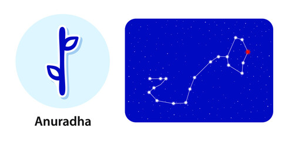

<
1. Pada 1st: The first pada comes on Leo Navamsa. The natives born in this pada are intelligent and quick learners. They are very eager to learn and get professional qualifications.
2. Pada 2nd: The second pada comes on Virgo Navamsa. The native born in this pada is a constant learner. He is also very disciplined. These qualities help him in achieving success a lot quicker than others.
3. Pada 3rd: The third pada comes from the Libra Navamsa. The natives born in this quarter are social and may have a large friend circle. This can come as a boon to them as the bigger circle gets him desiring more from life.
4. Pada 4th: The fourth pada comes on the Scorpio Navamsa. The natives born in this pada have abundant energy to pursue all kinds of esoteric and exoteric goals in life.
“following rādhā“β, δ and π Scorpionis
Lord: Shani (Saturn)
Symbol : Triumphal archway, lotus
Deity : Mitra, one of Adityas of friendship and partnership
Stone: Blue Sapphire is your lucky stone.
Lucky numbers : 9 and 8
Lucky Day: Monday, Thursday and Saturday
If a persons born in this nakshatra give her or him a name with starting letter “N”.
These persons should not live in East facing houses.
Persons born in Anuradha nakshatram will have good taarabalam with following nakshatrams:
Aslesha, Pubba, Hasta, Swati, Visakha, Jyesta, Purvashada, Sravanam, Satabisham, Purvabhadra, Revati, Bharani, Rohini, Arudra, Punarvasu.
Indian zodiac: 3°20′ – 16°40′ Vrishchika
Western zodiac 29°20′ Scorpio – 12°40′ Sagittarius
Anurada Nakshatra
Characteristics male
The male born in the Anuradha Nakshatra dons attractive looks that, however, may not be liked by everyone. Their bright eyes are special luring characteristics of these natives. Nature wise, the native is confident and a hard worker. He has a special skill of handling difficult situations with ease and in a systematic way. Yet, his mind is always wandering in the fear of what would happen to him in the future. The double thoughts could not only stress him out but also debar him from enjoying his life to the fullest or even forging relationships with the opposite gender. These people could be a bit miser too, but the quality turns out to be a blessing for them.Profession male
The male born in the Anuradha Nakshatra is advised to start his own business. You have a character that wants to lead, and thus leading from the top would not only be easy but also very satisfactory for you. There are also chances that you might start earning at a young age of 18-20 years. This will considerably enhance your experience, which will help you in setting up your own venture in the later years. The professional prospect till the age of 48 is very good for you. Thereafter, bad health might take your interest off from business, but its profitability won't decline.Compatibility male
The male born in the Anuradha Nakshatra will be close to both his mother and father. He will derive monetary benefits from his father, who will help him in business too. However, if doing business together, there are chances of friction between the duo. The native is old school but may get tucked with a woman who is slightly tilted towards the modern side of the world. The match may not look compatible at first, but as you stay together, both of you will learn each other's ways and thus will be able to live a happy life together.Health male
The male born in the Anuradha Nakshatra has the blessing of good health. However, minor health woes such as dental problems, cough and cold, and constipation may be by your side at regular intervals.Characteristics female
The female born in the Anuradha Nakshatra looks innocent from the outside but has a cryptic personality that is witnessed by a limited few. This personality of hers is about her sexual nature, which she is shy to talk about but not to one who matches her vibe, aka, she finds compatible. The female born in Anuradha Nakshatra has a heart of gold and is very helpful towards others. She likes to live a simple life and is less influenced by what other women are doing. However, you not being 'womanly' is something that can concern your mother a lot. The female has a good friend circle, and she naturally shines well in the social and political fields. You will likely meet your special one after crossing the age of 23.Profession female
The female born in the Anuradha Nakshatra has a good career if she indulges in fine arts. It is good that you work hard on your education, but an academic degree won't come to your use as you will likely choose or be interested in a completely different profession. Many professional exponents of the dance art form are known to be born in this Nakshatra and you can too follow the lead.Compatibility female
The female born in the Anuradha Nakshatra is born with the tag of being an idol mother, who empowers her children to achieve glory. She herself is ambitious and always willing to achieve more and making the best of her time. Hence, the work-life compatibility between her and her husband is amazing. Also, she cares for her mother and is more attached to her father. Her devotion to her in-laws makes her even more desirable.Health female
The female born in the Anuradha Nakshatra may have to deal with menstrual issues. Chances of irregular periods are also prevalent for these natives. Besides, after crossing the age of 26, problems of headache and nasal catarrh may also keep you awake at night. Countering these will need you to adopt an active lifestyle.Anurada Nakshatra Padas
1. Pada 1st: The first pada comes on Leo Navamsa. The natives born in this pada are intelligent and quick learners. They are very eager to learn and get professional qualifications.
2. Pada 2nd: The second pada comes on Virgo Navamsa. The native born in this pada is a constant learner. He is also very disciplined. These qualities help him in achieving success a lot quicker than others.
3. Pada 3rd: The third pada comes from the Libra Navamsa. The natives born in this quarter are social and may have a large friend circle. This can come as a boon to them as the bigger circle gets him desiring more from life.
4. Pada 4th: The fourth pada comes on the Scorpio Navamsa. The natives born in this pada have abundant energy to pursue all kinds of esoteric and exoteric goals in life.